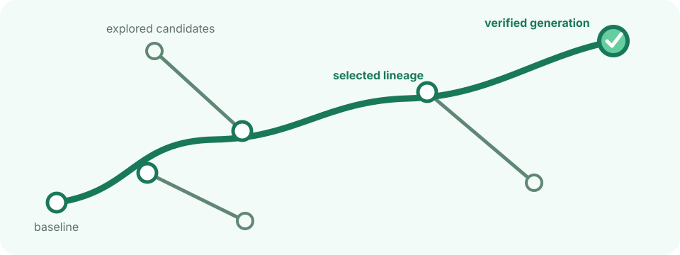
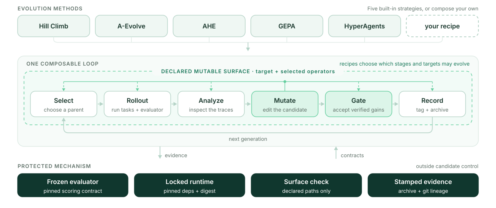
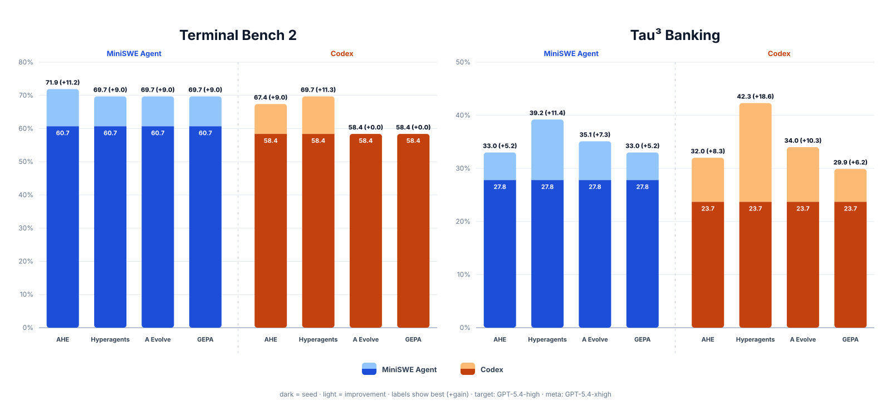

Framework 开源框架
RSIHub
Build agents that improve — and keep the evidence. 让智能体持续改进，并保留证据。
A file-based framework for evaluator-driven evolution, reproducible candidate lineage, and controlled self-modification. 一个基于文件的框架，支持评估器驱动的进化、可复现的候选谱系，以及受控的自我修改。

What RSIHub does RSIHub 做什么
RSIHub gives an agent a controlled way to improve itself. It runs candidates against a fixed evaluator, keeps the evidence for every generation, and carries verified improvements forward without letting candidate code rewrite the rules that score it. RSIHub 为智能体提供一种受控的自我改进方式：候选在固定的评估器上运行，每一代都保留证据，经验证的改进被传递下去——同时不允许候选代码改写为其打分的规则。
| For agent builders 面向智能体开发者 | For researchers 面向研究者 | Evidence built in 内建证据 |
|---|---|---|
| Improve prompts, skills, harnesses, and agent code in a reusable experiment workspace. 在可复用的实验工作区中改进提示词、技能、harness 与智能体代码。 | Compare evolution strategies under fixed evaluation and mutation boundaries. 在固定的评估与变异边界下比较不同进化策略。 | Connect every candidate to scores, artifacts, archive records, and Git lineage. 将每个候选与得分、产物、归档记录和 Git 谱系关联起来。 |
How RSIHub works RSIHub 如何工作
Every recipe composes the same loop: 每个 recipe 都由同一个循环组成：
select → evaluate → analyze → mutate → gate → record

A recipe decides how parents are selected, how traces are analyzed, what may be edited, and which evaluations admit a new generation. The framework owns the mechanism that makes those decisions inspectable: clean candidate snapshots, protected scoring, surface enforcement, Git tags, and stamped archive records. Recipe 决定如何选择父代、如何分析轨迹、哪些内容可以被编辑、以及哪些评估可以准入新的一代。框架则负责让这些决策可检查：干净的候选快照、受保护的打分、变异面约束、Git 标签与盖章的归档记录。
What can evolve 什么可以进化
| Surface 可进化面 | Examples 示例 | Best fit 适用场景 |
|---|---|---|
| prompts and skills 提示词与技能 | system prompts, task skills, reusable instructions 系统提示词、任务技能、可复用指令 | policy and behavior improvement 策略与行为改进 |
| harnesses and target code harness 与目标代码 | tools, orchestration, agent implementation 工具、编排、智能体实现 | agent engineering 智能体工程 |
| selected evolution operators 被选定的进化操作符 | analysis or mutation policy chosen by a recipe recipe 选定的分析或变异策略 | controlled co-evolution 受控的共同进化 |
Each recipe declares its mutable paths. Evaluators, archive stamps, and the vendored framework mechanism stay outside that surface. 每个 recipe 声明自己的可变路径。评估器、归档盖章与内置的框架机制始终位于可变面之外。
Recipes
| Choose this when you want to… 当你想要… | Recipe | Mutable surface 可变面 |
|---|---|---|
| improve one candidate from its current best parent 从当前最优父代持续改进单个候选 | hill_climb |
target |
| evolve prompts and reusable agent skills 进化提示词与可复用的智能体技能 | aevolve |
prompt and target skills |
| engineer the agent harness against evaluator feedback 依据评估器反馈改进 agent harness | ahe |
target |
| balance multiple objectives with minibatch validation 通过 minibatch 验证平衡多个目标 | gepa |
prompt and task skill |
| co-evolve the target and selected evolution policy 让目标与选定的进化策略共同进化 | hyperagents |
target and selected operators |
See the recipe guide for each strategy’s workflow and configuration. 每个策略的工作流与配置见 recipe 指南。
Skill evolution showcase 技能进化 Showcase
RSIHub can improve a Skill as a complete package: instructions, references, and validation scripts evolve together while a frozen evaluator keeps the comparison honest. In this local Paper2Poster run, the same Codex model and paper prompt produced both LoRA posters below. RSIHub 可以把一个 Skill 作为完整的包来改进：指令、参考资料与验证脚本共同进化，同时由冻结的评估器保证比较的公平。在这次本地 Paper2Poster 运行中，同一个 Codex 模型和同一条论文提示词生成了下面两张 LoRA 海报。


Across the four-paper showcase, the deterministic completion pass rate moved from 1/4 at Gen 0 to 4/4 at Gen 2. The trials ran concurrently through Harbor’s local environment without Docker and retained ATIF trajectories plus evaluator-owned visual feedback. This is a representative evolution run rather than a broad benchmark. 在四篇论文的 showcase 中，确定性完成通过率从 Gen 0 的 1/4 提升到 Gen 2 的 4/4。这些试验通过 Harbor 的本地环境并发运行（无需 Docker），并保留了 ATIF 轨迹与评估器持有的视觉反馈。这是一次代表性的进化运行，而非广泛的基准测试。
Benchmark results 基准测试结果
Scores are shown as seed → best, with the absolute change underneath. All runs use a GPT-5.4-high target model and a GPT-5.4-xhigh Codex meta-agent. 分数以 seed → best 呈现，括号中为绝对变化。所有运行使用 GPT-5.4-high 目标模型与 GPT-5.4-xhigh Codex meta-agent。

Terminal Bench 2
Split: 50 train / 19 gate / 20 sealed. 数据划分：50 train / 19 gate / 20 sealed。
| Target agent 目标智能体 | Method 方法 | Train | Gate | Sealed | Overall |
|---|---|---|---|---|---|
| MiniSWE Agent | AHE | 58.0% → 74.0% (+16.0%) |
57.9% → 68.4% (+10.5%) |
70.0% → 70.0% (+0.0%) |
60.7% → 71.9% (+11.2%) |
| Hyperagents | 58.0% → 68.0% (+10.0%) |
57.9% → 73.7% (+15.8%) |
70.0% → 70.0% (+0.0%) |
60.7% → 69.7% (+9.0%) |
|
| A Evolve | 58.0% → 68.0% (+10.0%) |
57.9% → 78.9% (+21.0%) |
70.0% → 65.0% (−5.0%) |
60.7% → 69.7% (+9.0%) |
|
| GEPA | 58.0% → 68.0% (+10.0%) |
57.9% → 68.4% (+10.5%) |
70.0% → 75.0% (+5.0%) |
60.7% → 69.7% (+9.0%) |
|
| Codex | AHE | 58.0% → 74.0% (+16.0%) |
52.6% → 47.4% (−5.2%) |
65.0% → 70.0% (+5.0%) |
58.4% → 67.4% (+9.0%) |
| Hyperagents | 58.0% → 72.0% (+14.0%) |
52.6% → 57.9% (+5.3%) |
65.0% → 75.0% (+10.0%) |
58.4% → 69.7% (+11.3%) |
|
| A Evolve | 58.0% → 58.0% (+0.0%) |
52.6% → 52.6% (+0.0%) |
65.0% → 65.0% (+0.0%) |
58.4% → 58.4% (+0.0%) |
|
| GEPA | 58.0% → 58.0% (+0.0%) |
52.6% → 52.6% (+0.0%) |
65.0% → 65.0% (+0.0%) |
58.4% → 58.4% (+0.0%) |
Tau³ Banking
Split: 50 train / 20 gate / 27 sealed. 数据划分：50 train / 20 gate / 27 sealed。
| Target agent 目标智能体 | Method 方法 | Train | Gate | Sealed | Overall |
|---|---|---|---|---|---|
| MiniSWE Agent | AHE | 30.0% → 36.0% (+6.0%) |
35.0% → 35.0% (+0.0%) |
18.5% → 25.9% (+7.4%) |
27.8% → 33.0% (+5.2%) |
| Hyperagents | 30.0% → 38.0% (+8.0%) |
35.0% → 45.0% (+10.0%) |
18.5% → 37.0% (+18.5%) |
27.8% → 39.2% (+11.4%) |
|
| A Evolve | 30.0% → 34.0% (+4.0%) |
35.0% → 45.0% (+10.0%) |
18.5% → 29.6% (+11.1%) |
27.8% → 35.1% (+7.3%) |
|
| GEPA | 30.0% → 32.0% (+2.0%) |
35.0% → 45.0% (+10.0%) |
18.5% → 25.9% (+7.4%) |
27.8% → 33.0% (+5.2%) |
|
| Codex | AHE | 30.0% → 36.0% (+6.0%) |
30.0% → 45.0% (+15.0%) |
7.4% → 14.8% (+7.4%) |
23.7% → 32.0% (+8.3%) |
| Hyperagents | 30.0% → 36.0% (+6.0%) |
30.0% → 50.0% (+20.0%) |
7.4% → 48.1% (+40.7%) |
23.7% → 42.3% (+18.6%) |
|
| A Evolve | 30.0% → 38.0% (+8.0%) |
30.0% → 45.0% (+15.0%) |
7.4% → 18.5% (+11.1%) |
23.7% → 34.0% (+10.3%) |
|
| GEPA | 30.0% → 36.0% (+6.0%) |
30.0% → 35.0% (+5.0%) |
7.4% → 14.8% (+7.4%) |
23.7% → 29.9% (+6.2%) |
Trustworthy by construction 从构造上可信
RSIHub separates evolvable policy from the mechanism that judges it: RSIHub 将可进化的策略与评判它的机制分离：
- The evaluator is frozen. Candidates cannot change the scoring contract. 评估器被冻结。候选无法更改打分契约。
- Mutation is bounded. Each recipe declares which target and operator paths may change. 变异有边界。每个 recipe 声明哪些目标与操作符路径可以改变。
- Evaluation is canonical. New generations are scored from clean candidate snapshots. 评估是规范的。新的世代从干净的候选快照中打分。
-
Evidence is durable. Reports recompute results from stamped
archive.jsonlrecords and Git generation tags. 证据是持久的。报告从盖章的archive.jsonl记录与 Git 世代标签中重新计算结果。
Operators run as subprocesses rather than being imported into the framework process. See the design guide for the complete ownership model and invariants. 操作符以子进程方式运行，而非被导入框架进程。完整的所有权模型与不变量见设计指南。
Project status & roadmap 项目状态与路线图
RSIHub is an active prototype for research and controlled experimentation. The current focus is reliable experiment mechanics, local-first workflows, and composable strategies for different agent-evolution scenarios. RSIHub 是一个面向研究与受控实验的活跃原型。当前重点是可靠的实验机制、本地优先的工作流，以及面向不同智能体进化场景的可组合策略。
- Scenario-oriented recipes: compose the current operator library into opinionated recipes for different agent-evolution use cases. 面向场景的 recipes：将现有操作符库组合成针对不同智能体进化用例的成熟配方。
- Local-first workflows: make lightweight, Docker-free iteration a first-class path for trusted local agents, prompts, skills, and small features. 本地优先的工作流：让轻量、无需 Docker 的迭代成为受信任的本地智能体、提示词、技能与小功能的一等路径。
- More method integrations: add evolution and search methods while preserving the shared evaluator, lineage, and evidence contracts. 更多方法集成：在保持共享的评估器、谱系与证据契约的前提下，加入更多进化与搜索方法。
Documentation 文档
| Document 文档 | Purpose 用途 |
|---|---|
| Documentation site 文档站 | Installation, operation, concepts, guides, and reference. 安装、操作、概念、指南与参考。 |
| Quick start | Recipe launcher setup and configuration. Recipe 启动器的安装与配置。 |
| Design | System model, ownership boundaries, and invariants. 系统模型、所有权边界与不变量。 |
| Architecture | Enforced source-module map and line budgets. 强制执行的源码模块映射与行数预算。 |
| Recipes | Supported evolution strategies. 支持的进化策略。 |
| Contributing | Development setup and repository conventions. 开发环境搭建与仓库规范。 |
License 许可协议
RSIHub is licensed under Apache-2.0. See NOTICE for required attributions. RSIHub 以 Apache-2.0 协议开源，所需的署名信息见 NOTICE。
Back to Simple Agent Lab 返回 Simple Agent Lab